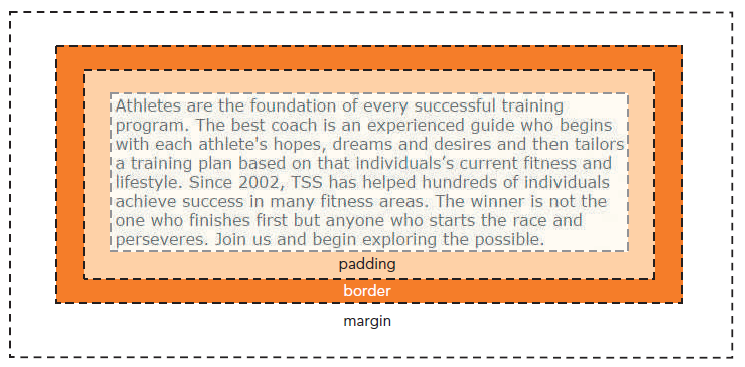

The Cascading Style Sheet (CSS) language is used to define structure and styling rules for web pages. CSS is a modular language, allowing users to independently target specific elements and parts of a web page.
Just like HTML (and every language) CSS has different versions, the latest of which is CSS3.
The basic layout of a CSS document looks like this:
@charset "an encoding standard"
/*
multi-line comment
*/
element selector {
property1: Value1;
property2: Value2;
.....
}
Just like in HTML, it is important to set the character encoding set at the start of the document. We will use UTF-8 here like we did in the HTML Guide.
The selector is the element or the group of elements we want to change (h1, div, body, etc...) and the properties and values set what we want to do to the elements. We can change the font, the colour, the position and a lot more.
To use our styling sheet, we need to import it into our HTML file as follows:
<head>
<link rel="stylesheet" href="your_css_document.css">
</head>
There are many ways of working with colors in a CSS document. CSS supports 147 color names, so we can just call them by name (yellow, blue, green, etc.).
Other ways include expressing the color in RGB format (255,255,255), HSL format (0,0%,100%), or hexadecimal format (#FFFFFF).
h1 {
color: white;
}
div {
background-color: rgb(255,255,255);
}
p {
color: hsl(0,0%,100%);
}
footer {
background-color: #FFFFFF;
}
In the previous example, we saw that if we want to change the <h1> element color we would just select it and set the color as required, but what if we don't want to change the color of every <h1> element to white?
Let's introduce contextual and attribute selector patterns. Using these will allow us to target the specific element or elements we want.
First let's see how contextual selectors work. Making use of the hierarchical structure of documents, a contextual selector will allow us to select the child of a parent, or a descendant(s) inside the hierarchical structure. We can also select multiple elements using commas or select "sibling" elements (elements adjacent in hierarchy) with a "+".
/* This is a wild card, it selects any element in the document */
* {
color: red;
}
/* We have seen this one before, it will target any h1 element in the document */
h1 {
color: green;
}
/* This will target every h1 and every p element and give them the same atributes */
h1, p {
color: blue;
}
/* This will target only the li elements that are nested directly inside a ul element */
ul > li {
text-align: center;
}
/* This will target ol elements directly preceded by a p element */
p + ol {
text align: left;
}
/* This will select ol elements that are eventually preceded by a p element */
p ~ ol {
background-color: rgb(165,80,200);
}
Another way to select specific elements is to specify attributes that are attached to them. This allows us to pick and choose exactly what elements we want to mess with, and even define our own element groups of sorts, but is not as quick as simply typing "body > p" Two popular ways to do this are with IDs and classes.
/* --- HTML Code --- */
<h1 id="title">Web Development Course</h1>
<h2 class="topic">General Style Rules</h2>
/* --- CSS ---*/
/* Selects only h1 with the id "title" */
h1#title {
color: green;
}
/* Selects any element with the id "title" */
#title {
color: green;
}
/* Selects only h2 elements with the class "topic" */
h2.topic {
color: pink;
}
/* Selects any element with the class "topic" */
.topic {
color: pink;
}
/* Selects all hypertext elements containing the "href" attribute */
a[href] {
color: purple;
}
When working with stylesheets, we can also work with the appeareance of our fonts, we can change the font itself, the size, the color, and many more.
h1#title {
font-family: 'Arial Black', Gadget, sans-serif;
color: green;
font-size: 5em;
font-weight: 300; /*This specifies the stroke thickness of our font*/
}
We don't have to use the predefined fonts available, there are also ways to import external fonts. The best format for a font is the Web Open Font Format (WOFF) because it is supported by almost all current browsers.
Another good thing about importing fonts is that we don't necessarily have to download it there is also the option to import it from the internet via a URL.
/*Downloaded font*/
@font-face {
font-family: : 'Roboto', sans-serif;
src: url(RobotoRegular.woof) format('woof');
}
/*Imported from the web in the html header*/
<link rel="preconnect" href="https://fonts.googleapis.com">
<link rel="preconnect" href="https://fonts.gstatic.com" crossorigin>
<link href="https://fonts.googleapis.com/css2?family=Roboto&display=swap" rel="stylesheet">
We can also customize the style of lists. The most useful style allows us to choose what kind of list marker shows before each item. Options include circles, squares, letters, imported markers such as images, or nothing at all.
ol {
list-style-type: upper-roman;
}
ol {
list-style-image: url(my_marker.png);
}
Sometimes you may wish to change the space (padding) within an element, or the space around it (margin). This is particularly useful in nested box structures where elements contains other elements, and allows us to properly space our various lists, headers, paragraphs, and more.
We can adjust these spaces using the following:
/* This sets all padding to 25px */
p {
padding: 25px;
}
/* This sets all padding to different values in the top, right, bottom and left sections */
p {
padding: 25px, 10px, 15px, 5px ;
}
/* This sets only the top padding to 25px */
p {
padding-top: 25px;
}
/* This sets all margin to 25px, the same rules apply as in padding */
p {
margin: 25px;
}
/*This sets only the top margin to 25px*/
p {
margin-top: 25px;
}
We said previously that some elements follow a nested structure, but we can also set elements to display in specific ways. Below, img elements are set to behave as block containers.
img {display: block;}
We can also choose whether our page has a fixed layout which stays exactly as configured, or a fluid one which adjusts to the size of the window. Generally, fluid layouts are considered to be better practice.
/* This style rule sets image widths to 80% of their container, within the minimum and maximum width constraints */
image {
width: 80%;
min-width: 640px;
max-width: 1500px;
}
We can also float an element so it takes a position to the left or the right of its container's edge.
img {
float: left;
}
Grids are a technique that wasn't born in the web design but is widely applied for it. Usually web designers buy layouts and use frameworks such as Bootstrap, Skeleton or Neat to agilize work, but although tedious and time consuming, it can be done by ourselves.
To create a grid, you can first display it using display: grid; inside the element. Now, you can proceed to set the size of the columns and the rows:
/* This style rule creates a 2x3 grid with specified column and row areas*/
div#outer {
display: grid;
grid-template-columns: 250px 100px; /*This creates two columns*/
grid-template-rows: 50px 100px 150px; /*This creates three rows*/
}
/* We can also use fractional units to make the grid fluid */
div#outer {
display: grid;
grid-template-columns: 4fr 1fr; /*This creates two columns*/
grid-template-rows: 4fr 2fr 1fr; /*This creates three rows*/
}